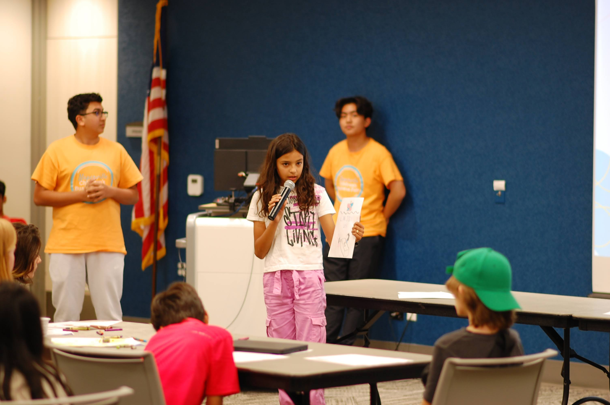
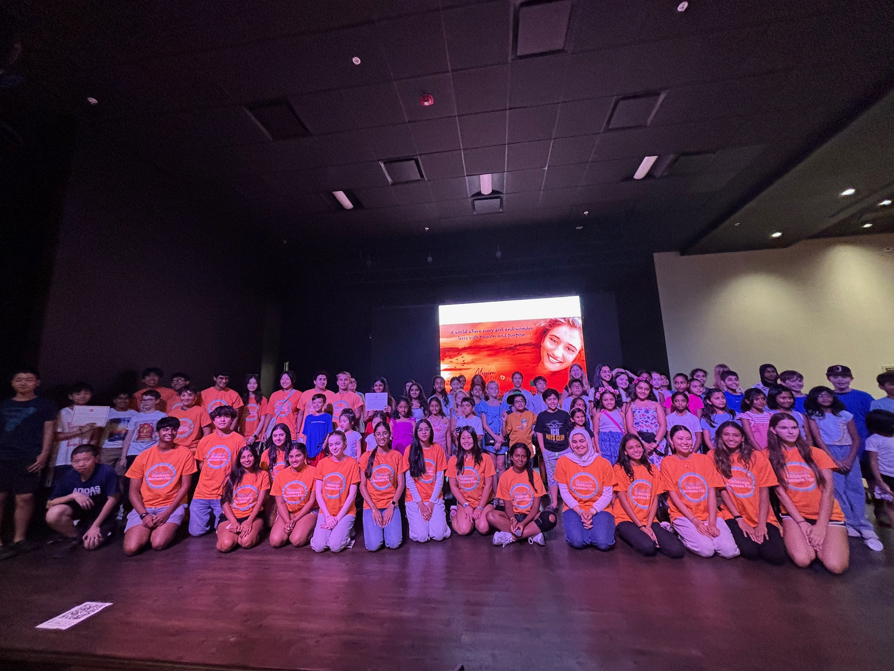
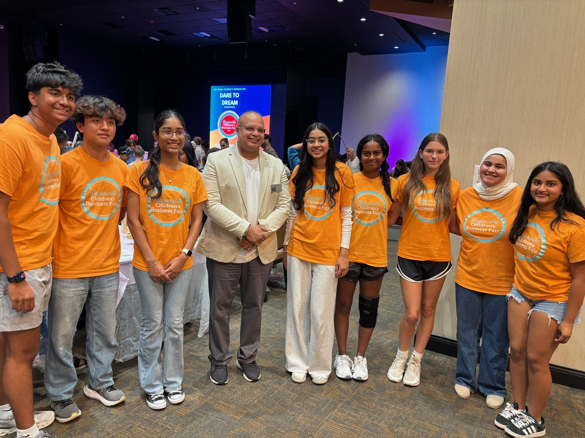

Hands-on Entrepreneurship
Hosted by a committee of local Naperville high school students, the
fair gives young entrepreneurs the chance to test the waters of
business by selling their own products and services in a supportive
environment. Kids get real-world experience with planning, budgeting,
marketing, and customer interaction. Past fairs have welcomed hundreds of
kidpreneurs and thousands of community visitors.

Feedback & Mentorship
We believe the process is just as important as the outcome.
Participants receive feedback from high school judges and local
business professionals throughout the day. Awards recognize standout ideas and
execution at the end of the fair, giving kids the confidence they need to succeed.

Community Powered
Families, neighbors, and sponsors help make the fair a welcoming
celebration of youth creativity and leadership. We're proud to bring together
Naperville and the surrounding suburbs to foster the next generation of
creators and leaders.